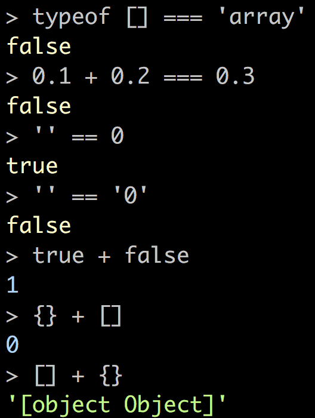

Seven ways that your Front End Apps win using Docker!
- Lightweight / Easy to Use
- Isolation
- Environmental Parity
- CI/CD
- Versioning
- Community Support
- Composition
A recent challenge of mine...
I want a space for architecture diagrams that is...
- versioned
- portable
- has built-in tooling
- hopefully free
<insert slide here to represent hours of searching>
Travis' Dockerhub Theory™
If there is a dockerfile for a thing then it is likely there is at least one docker hub repo for the thing.
> docker pull fjudith/draw.io
> docker run -it --rm --name="draw" -p 8080:8080 -p 8443:8443 fjudith/draw.io
Okay... cool tool but what about saving diagrams locally?
<insert slide here to represent hours of searching>

draw.io has an embedded most and will listen for posted messages to the frames content window!
This sounds like a job for a client/server application!
docker-compose.yml
version: '3'
services:
davinci-client:
build:
context: ./etc
dockerfile: Dockerfile-client
ports:
- "3000:3000"
volumes:
- ./client:/app
- ./diagrams:/diagrams
depends_on:
- drawio
- server
...
docker-compose.yml
...
server:
build:
context: ./etc
dockerfile: Dockerfile-server
ports:
- "5000:5000"
volumes:
- ./server:/app
- ./diagrams:/diagrams
...
docker-compose.yml
...
drawio:
build:
context: ./etc
dockerfile: Dockerfile-drawio
ports:
- "8080:8080"
> docker-compose up -d
> docker-compose down